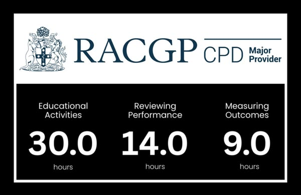
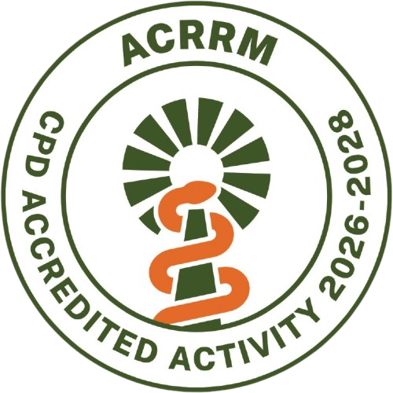
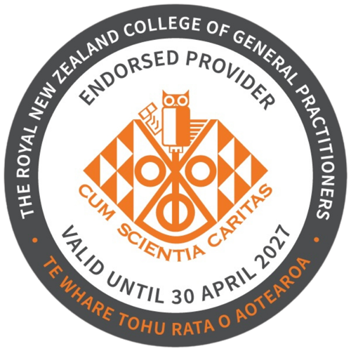
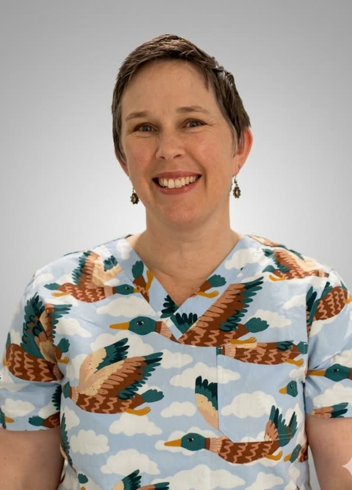
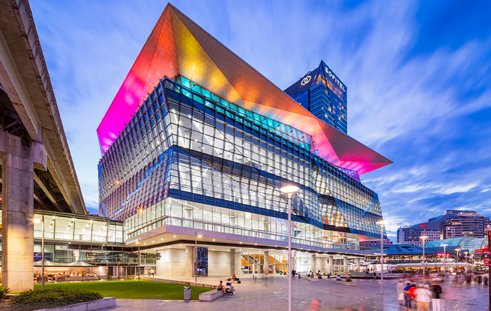

2+ GPs
52%off
$719.52$1,499per Congress Pass
Home · Congress · Sydney
GP Refresh Congress Sydney 2027
GP Refresh Sydney 2026 highlightsWatch on YouTube ↗
Leading clinicians distil a 1-hour lecture into a 6-minute TED-style talk, each with a clear learning outcome. Two days, eight sessions, panel discussions after each block, and every break in the Exhibition Hall.
Program
Every topic is a 6-minute talk with a clear learning outcome. Open a session to see its topics.
Shown: the 86 topics from the 2026 program. The Sydney 2027 program is announced soon.
CPD hours allocation
up to53
| Activity | Educational activities | Reviewing performance | Measuring outcomes | Total |
|---|---|---|---|---|
| Pre-Congress activity | 12 | 6 | 1 | 19 |
| Congress Day 1 | 6 | 0 | 0 | 6 |
| Congress Day 2 | 6 | 0 | 0 | 6 |
| CPR Workshop | 2 | 0 | 0 | 2 |
| Post-Congress activity | 4 | 8 | 8 | 20 |
| Total | 30 | 14 | 9 | 53 |



RNZCGP members can claim up to 80 CME credits.
Group discounts · end 30 December
Bring more GPs and save more, up to 65% off every Congress Pass.
2+ GPs
52%off
$719.52$1,499per Congress Pass
5+ GPs
55%off
$674.55$1,499per Congress Pass
10+ GPs
60%off
$599.60$1,499per Congress Pass
15+ GPs
65%off
$524.65$1,499per Congress Pass
Prices per person in Australian dollars, including GST. See the terms and conditions.
Speakers & panellists
Shown: the 2026 faculty of 44. Sydney 2027 speakers are announced soon.
Scientific Committee

Editor, Murtagh's General Practice 9th Ed.

Past RACGP President

Past RACGP Vice-President

Specialist GP

Specialist GP
Swipe →

Venue
Sydney · 26–27 June 2027
Group discounts of up to 65% end 30 December.